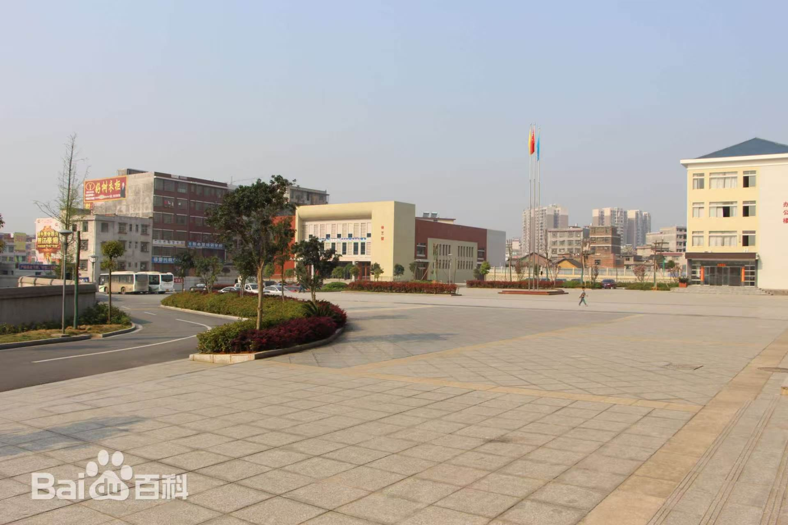
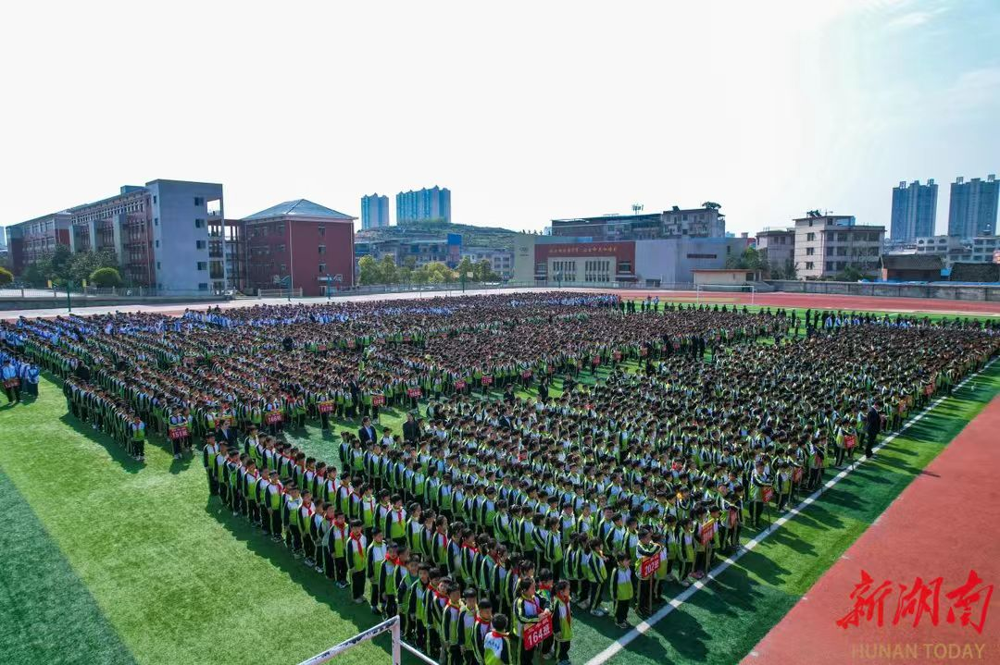

🏫 支教地点：隆回九龙学校
我们实践活动开展的校园全貌与办学背景
学校概况

隆回九龙学校坐落于湖南省邵阳市隆回县，是一所九年一贯制公办义务教育学校。 2007年政府规划筹建，2011年正式办学，至今承载着县域内大量务工子女的求学梦想， 有效缓解当地大班额、外来务工孩子入学难的民生问题。
校园占地136.5亩，配套教学楼、科技楼、体艺馆、全塑胶标准运动场、多媒体计算机教室等完善现代化教学设施。 目前开设101个教学班，在校学生6300余名，教职工270余人，办学规模位居县域前列，现任校长刘卫东。
办学成果与特色
- 教学实力扎实：办学以来教学质量稳居全县前三，师生累计斩获省、市级学科、艺体竞赛奖项40余项，获评省级模范教工之家。
- 多元特色育人：2022年落地阅读培育专项计划，常态化开展书香课堂；同步打造艺体特色课程，获评全国足球特色学校、邵阳市“最美校园”。
- 暖心民生保障：2024年纳入隆回县义务教育营养改善计划，投入380万元专项食材配送项目，为全体学生提供安全、营养的校园餐食。

支教意义
校内多数学生为外出务工家庭子女，缺少课外拓展、素质教育资源。 学校重视阅读、趣味科普、艺术体育类拓展课程，但专业课外师资缺口较大。
长青青耘支教团在此开展趣味数学、美育、团体破冰等公益课堂，依托校园完善场地设施， 为孩子们带来传统文化、绘画、团队游戏等特色课程，填补乡村孩子素质教育空白， 陪伴乡村少年拓宽视野、丰富童年。
📍 学校地址：湖南省邵阳市隆回县九龙学校
（你可以把百度/高德地图截图放在这里，或嵌入地图iframe）